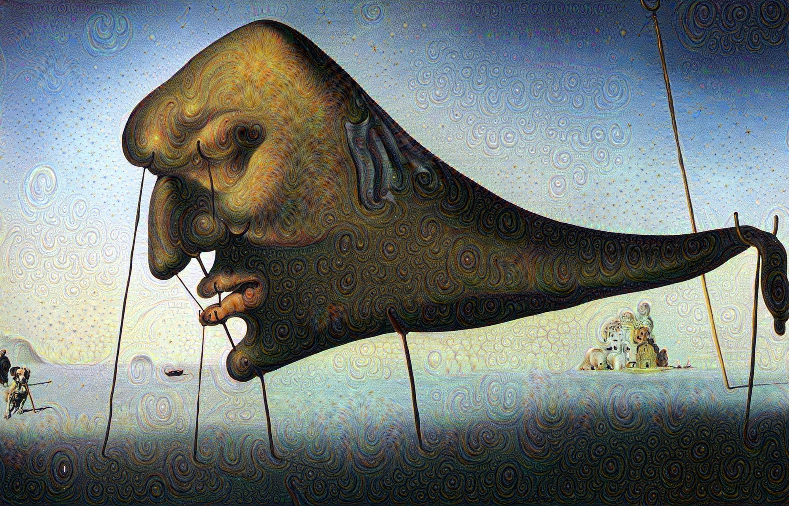
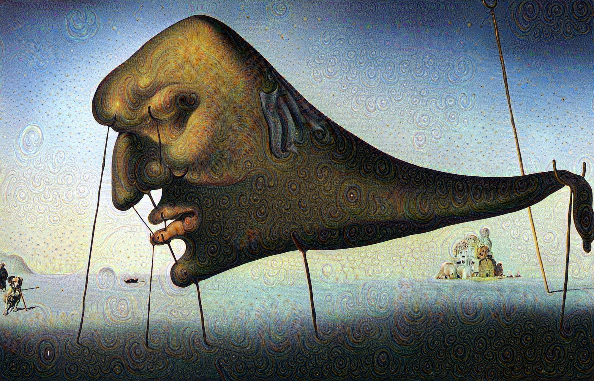
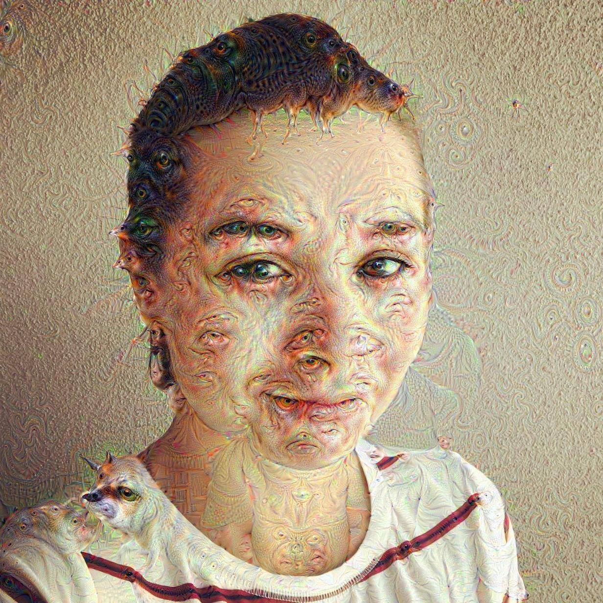

About an year ago, Google published a seminal paper named ImageNet Classification with Deep Convolutional Neural Networks, together with a blog post, which became known as Inceptionism. This work unveiled not only a new way of composing hallucinating artistic pictures, but astonishing new insights on how convolutional neural networks work. Now we are able to see what each hidden layer in the net has learned, or in a more philosophical explanation, what the machine sees.
Convolutional Neural Networks take an image (a vector of pixels) as input, and transform the image through several layers of nonlinear functions (kind of how kernels work). The dream images are just a gradient ascent process that minimizes the L2 norm of activation functions of some deep neural network layer.
More specifically, in the task of image classification:
- lower levels reveal edge-like regions in the images (such as corners),
- intermediate layers represent basic shapes and components of objects (such as eyes),
- the final layers compose the complete interpretation (such as dog), but in a psychedelic way.
Google released the code of its GoogLeNet model, which is trained trained on ImageNet dataset. I slightly adapted it here, adding some instructions on how one can play with it in a AWS GPU instance.
Examples of deep dream with the following layers:
inception_3b/5x5_reduce (lower levels):
inception_4c/output (higher levels):
inception_3b/output (controlled dreams):
 

Enjoy!

Comments !